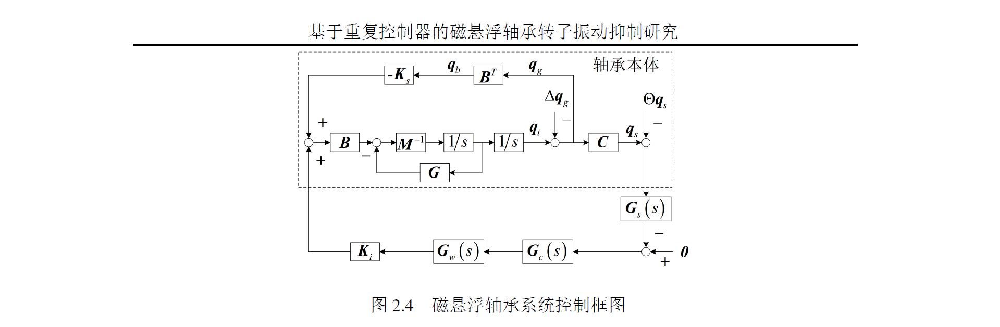

1 公式
如果你之前一直在用 MathType 输入公式，那么刚开始使用 LaTeX 语法输入公式可能有点陌生，但是没关系，你马上就是适应这种输入公式的感觉。LaTeX 语法中公式也分为行内公式和行间公式：行内公式用成对的$符号将字母公式括起来，像这样$y=2x$；行间公式像这样使用：1
2
3\begin{equation}
y = 2x
\end{equation}
有时候我们在正文中某个地方需要引用某个公式，那么我们需要先给公式一个唯一的身份，使用\label命令：1
2
3
4\begin{equation}
y = 2x
\label{eq:dynamics}
\end{equation}
\label{文本}中的文本可以任意输入，只要不与其它公式重复即可。然后在正文中，使用\ref{文本}就可以引用这个公式了。你无需关心这个公式是 1-2 或者是 3-5，LaTeX 模板已经替你考虑好了，它会自动按照公式所在的章节进行编号。
一开始你可能不好应付非常复杂的公式，毕竟 LaTeX 语法不是所见即所得的。你可以借助 MathType 来生成 LaTeX 格式的公式：MathType 中打开Preference>Cut and Copy Preferences，设置成MathML or TeX > Plain TeX，此时可以先在 MathType 输入好公式，然后复制这个公式，粘贴就可以得到 LaTeX 格式的公式了。注意，对于 MathType 输入的行间公式，复制粘贴之后会得到\[y=2x\]这种格式，我们将它放到\begin{equation}和\end{equation}之间的时候，只需要复制\[和\]之间的内容，否则公式会报错。
对于各种罗马字符或数学符号，LaTeX 处理不在话下，查阅这份 数学符号表 即可。
2 图表
图的使用格式是这样：1
2
3
4
5\begin{figure}[h!]
\includegraphics[scale=1.0]{2-4-control.png}
\caption{磁悬浮轴承系统控制框图}
\label{fig:2-4-control}
\end{figure}

表的使用格式是这样的：
1 | \begin{table}[htb] |
和公式一样，图和表也可以使用\label{文本}命令对其唯一命名，然后在正文使用\ref{文本}中引用。
图和表得位置是通过\begin{figure}或者\begin{table}后面的[]参数进行控制的，用法如下：
- h：当前位置，将图形放置在正文文本中给出该图形环境的地方。如果本页所剩的页面不够，这一参数将不起作用。
- t：顶部，将图形放置在页面的顶部。
- b：底部，将图形放置在页面的底部。
- p：浮动页，将图形放置在一只允许有浮动对象的页面上。
一般使用[htb]这样的组合，只用[h]是没有用的。这样组合的意思就是 latex 会尽量满足排在前面的浮动格式，就是h-t-b这个顺序，让排版的效果尽量好。
[!h] 只是试图放在当前位置。如果页面剩下的部分放不下，还是会跑到下一页的。一般页言，用 [!h] 选项经常会出现不能正确放置的问题，所以常用 [ht]、[htbp] 等。
3 单位
单位的使用依赖sinunitx包，NUA2 Thesis 已经添加了这个包，我们无需操心。在正文中使用\SI{数值}{物理量}命令插入物理量和单位。
用法举例：1
2
3
4\SI{0.08}{\metre}
\SI[per-mode=symbol]{67.0}{\newton\per\ampere}
\SI[per-mode=symbol]{-2.38e5}{\newton\per\metre}
\SI{0.782}{\metre\per\second\squared}
其他国际单位的使用方法请查阅这个包的 使用文档。
至此，你已经掌握了用这个模板写学位论文的能力。其它没有提到的地方请查阅 NUA2 Thesis 的 使用文档（该文档打包在 NUA2 Thesis 压缩包内）。这是我用 NUA2 Thesis 写的论文：《基于重复控制器的磁悬浮轴承振动抑制方法研究》，供你作为格式上的参考。
选择使用这个模板来写学位论文的你注定不是大多数，这意味着在写的过程中碰到某些问题时，你需要依靠自己去寻找解决方案，去谷歌、去百度、去看使用文档。但是请相信自己，为解决问题而付出时间不仅可以解决问题，也可以给你带来打磨一件工艺品般的成就感。